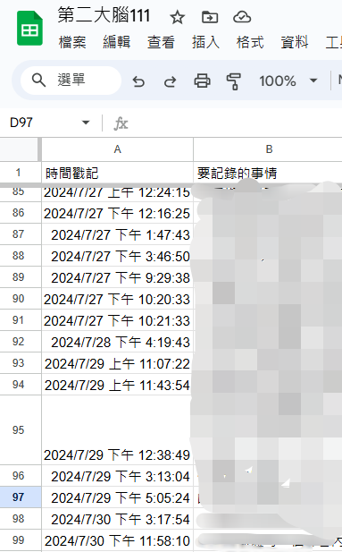
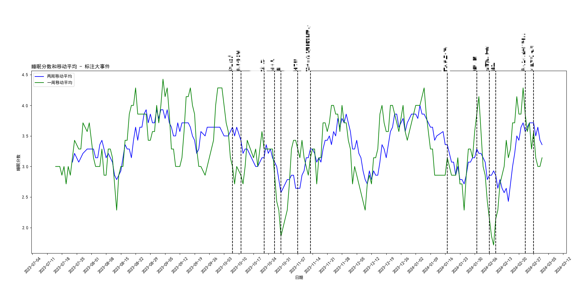
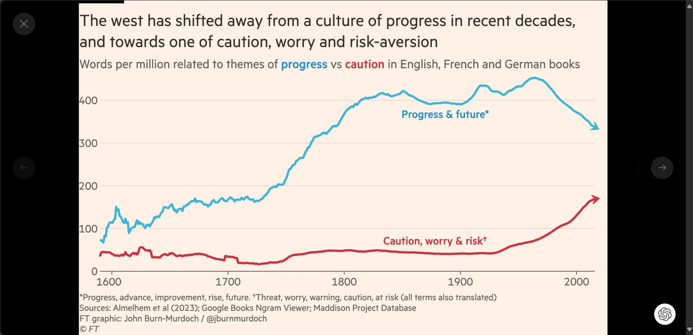
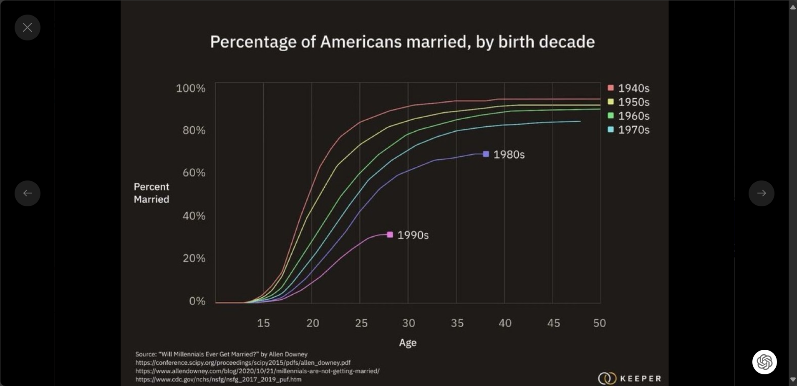
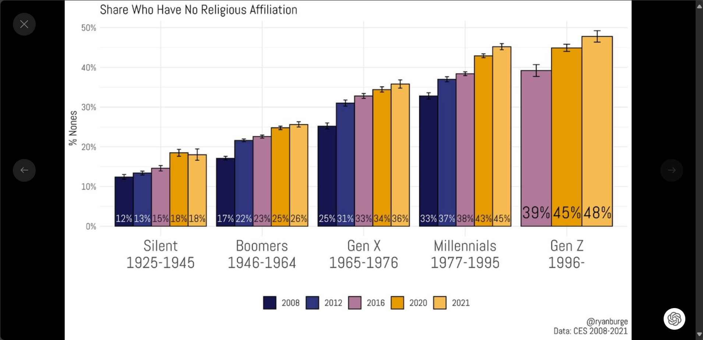
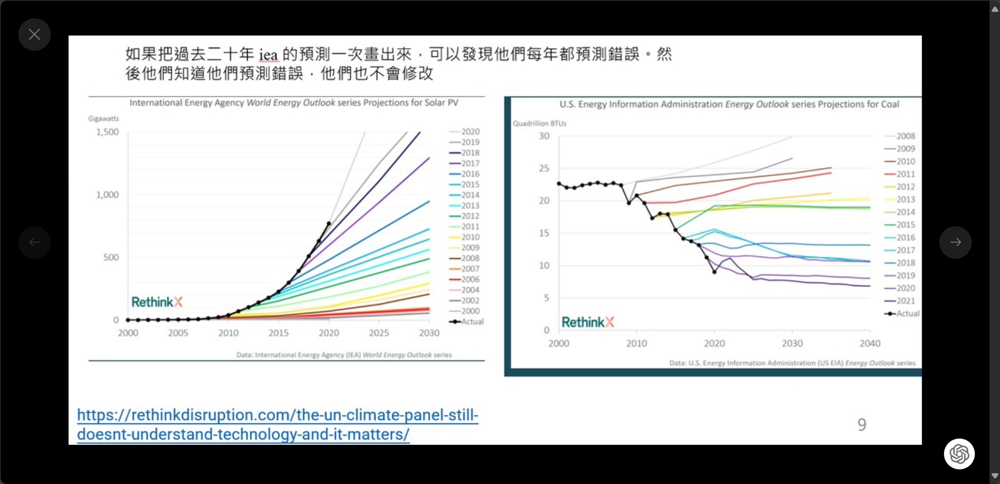
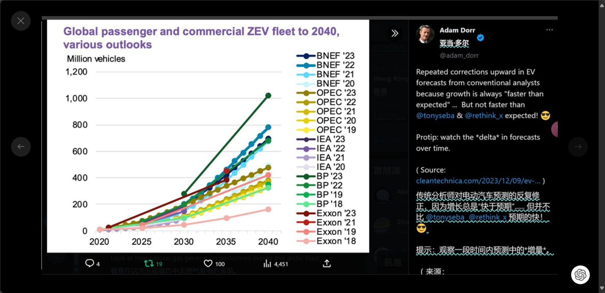

複製所有內容，到 chatGPT
MrAgentX的部落格
Visit my Threads profile
# 自閉症對於人類的意義
# 為什麼費曼學習法有用
# 對於ADHD的理解
對於ADHD的理解，可以從強化學習的角度來看。強化學習就像機器人在試煉場中不斷嘗試各種行為，透過反覆失敗和偶然的成功，逐漸學會一種技能。在這個過程中，為機器人的行為添加一點隨機性是必要的，因為這樣它才會去嘗試新事物。大多數嘗試會失敗，但偶爾的成功會帶來學習和成長。
GPT之父 Ilya Sutskever 曾提到：**「嘗試一些新東西，增加隨機性，如果發現結果與預期不符，就從中學習。」**
具體來說，**「嘗試看看你喜不喜歡，如果你喜歡，就多做一些。」**
缺乏隨機性的話，機器人就會陷入重複的行為模式，就像困在漩渦中的螞蟻。馬斯克認為，整個地球就像一個巨大的螞蟻漩渦，人類被困於重複性的生活中。而一場簡單的核戰爭或生化武器都可能讓人類全滅，因此我們需要向外探索，尋找更多可能性。
---
（Ilya Sutskever 言論參考影片連結：
https://youtu.be/9EN_HoEk3KY?t=558 ）">https://youtu.be/9EN_HoEk3KY?t=558">https://youtu.be/9EN_HoEk3KY?t=558）
# 精神分裂症的原因可能是大腦不同區域的連接受損
精神分裂症的原因可能是大腦不同區域的連接受損，形成了各自的小意識，然後為了要溝通，所以不同的區域會說話，是我最近聽到最有趣的想法之一
參考資料在留言
參考資料:
我秒數有調好哦
https://youtu.be/OaeYUm06in0?t=10109 說話人是斯坦福醫學系的精神科醫生/光遺傳學之父
原文:
這個想法是，它是大腦內部的交流，大腦的一部分無法告訴大腦的其他部分它在做什麼，所以幻聽在這方面非常有趣，它們經常有這種對話式的內心獨白，就像我們走在街上時，我們可能會有內心獨白，對發生的事情有想法，如果我們看到我們不喜歡的人，
https://youtu.be/Ft0gTO2K85A?si=40FG8LA9HedeIPF5 字幕位置 (28:24-29:31)
Ilya Sutskever 提到大腦中不同功能區域的專業化，並引用了一些與此相關的實驗和觀察：
大腦半球切除術的案例
某些患有癲癇的幼兒可能需要切除大腦的一半（半球切除術）以治療病症，但這些孩子長大後仍能發育成相對正常的成年人。他們的功能性腦區會重新分配到另一側的半球，儘管可能失去了一些信息處理的效率，但他們的神經功能仍能部分恢復。
與動物（雪貂）相關的實驗
提到了實驗將雪貂的視神經重新接駁到聽覺皮層，導致視覺信號映射到大腦的「聽覺」區域。實驗表明，大腦的聽覺皮層可以適應新的信號來源並發展出類似視覺皮層的功能。這顯示出大腦區域具有高度的可塑性。
文章
# 察覺壓力的方法
# 理解就是表達規律
人們在用語言表達某件事情的時候，大腦是找出一系列的符號排列組合來表達這件事情的規律。事情要如何執行就是這個事情的規律，程式人寫代碼的時候也是這樣，是在找出一個排列組合，符號的排列組合，來表達這件事情的運作邏輯還有規律。不論是自然語言，還是編程語言，都可以被轉換成一系列0跟1的排列，也就是說，這個也是用一系列0跟1的排列來表達事情的規律。
神經網路的每一次迭代，就是在尋找一組01排列來表達這件事情的規律。目前，一個模型大約幾GB，是好多個0跟1組成的。每一次的模型更新優化性能，就是找到一組更好的排列來表達模型的智慧。我們能夠找到最好的最短的排列嗎，我們找到了嗎，還沒有，遠遠沒有。0跟1的排列有好多好多種，每一次的模型更新優化性能就是找到一組更好的排列來表達智慧。
每一個神經網路，圖片辨識的、產生音樂的、語音辨識的，都是找到一組0跟1的排列來表達這件事情的規律，這件事情應該如何做。AI模型在過去幾年一直有個規律，每年我們能夠找到最好的、最短的模型，大約是前一年的10%，規律還沒有看到放慢的跡象。而0跟1的排列如此多樣我們也似乎遠遠還沒有到達極限。
計算機能夠生產的智慧的效率每年都會提高十倍，遠遠沒有達到理論值，因此我們可以預測未來會是一個充滿智慧的世界。手機再過幾年就會比人類聰明，再過幾年也許四年五年，我們會習慣周遭的許多電器都比自己還要聰明，聰明不知道有什麼用。
Ilya Sutskever: OpenAI Meta-Learning and Self-Play | MIT Artificial General Intelligence (AGI)
如果你有一個數據，然後你可以找到一個更短的程序來產生這些數據，那就代表你已經理解了所有的規律
https://www.youtube.com/watch?v=9EN_HoEk3KY&ab_channel=LexFridman 文章
#
# 諾貝爾獎得主們一直警告世界應該放慢對人工智慧
# 關於特斯拉無人出租車發表前的想法
# 《在人工智能時代長期有幫助的事情》
#
# OpenAI o1模型
<😊>
目前開放的模型其思考過程可能從幾秒鐘到幾分鐘不等，而他們的目標是讓未來的版本能夠思考更長的時間，甚至達到幾天或幾週[1]。OpenAI 計畫未來為所有免費使用者提供 O1 mini。[2]
官方建議表示，不需要嘗試指導模型，也不用告訴模型應該如何推理或進行思考，這些模型能夠接受抽象的高階問題，不需要將複雜的事情拆解成多個小步驟，我覺得在很大程度上，這些過程已被端到端的神經網絡所取代。
人們經常嘗試將複雜問題分解成多個小任務來逐步解決，但這個流程未必是最優的，因為它是基於人腦的局限所設計出來的。正如《苦澀的教訓》這篇文章中所提到的，最終，問題往往是通過搜索和學習來獲得突破性解答。
模型思考的時候會吐出許多跟這個問題相關的各種資訊，其實就是在利用其世界知識庫進行一種搜索。
此外，OpenAI 表示，他們使用強化學習來訓練模型。我的直覺猜測是，他們可能會將 GPT-4 置於一個「小房間」中，給予它一個困難的問題，讓它進行大量的思考來嘗試解決這個問題。如果問題被成功解決，那麼這次思考過程的經驗就會被保留下來，進而讓模型逐漸學會思考、學會處理問題，並變得更加聰明。
總結來說，人們不需要告訴模型應該如何解決問題，它會通過自己的學習過程，逐步掌握並找到解答的方式。
舉例來講，現今心理諮商會有一定的流程，但這些流程只是人類到目前為止找到的最優解，未必是最佳解。而模型的說服能力，已經在許多方面超越了人類。我相信，當模型的說服能力超過人類時，這就表明模型已經找到一種更有效的方式來說服並引導他人改變認知。
心理諮商本質上就是一個說服和引導的過程，旨在改變他人認知。未來，我認為模型將能夠找到更好的方法來調整人們的思維模式和認知方式。
[1]
我們的目標是讓未來的版本思考數小時、數天甚至數周。推理成本會更高，
OpenAI 負責強化學習的人的推特
https://x.com/polynoamial/status/1834280425457426689 [2]
我們還計劃為所有 ChatGPT Free 使用者提供 o1-mini 存取權限。
https://openai.com/index/introducing-openai-o1-preview/ 保持提示簡單直接：這些模型擅長理解和響應簡短、清晰的說明，而無需廣泛的指導。
避免思路鏈提示：由於這些模型在內部執行推理，因此沒有必要提示它們 「一步一步思考 」或 「解釋你的推理」。
https://platform.openai.com/docs/guides/reasoning?reasoning-prompt-examples=research [3]
我預期人工智慧在具備超人的一般智力之前就能夠具有超人的說服力，這可能會導致一些非常奇怪的結果 @samaltman
https://x.com/sama/status/1716972815960961174 # 今天認真看了Google 前 CEO eric schmidt 的談話
# 做了自己的部落格
# 利用Google表單和GPT，高效記錄和分析生活中的點滴


# 文章标题
#
#
# ASD
ASD =自閉症或者孤獨症 Autism Spectrum Disorder
ASD 的患者，另一半也是 ASD 的，幾率是一般人的10-12倍[1]
ASD 75%是遺傳的[2]
感覺好像 ASD 會去找另一個 ASD 生下濃度更高的 ASD
最終變得跟其他人與眾不同
然後最終建立自己的城市"矽谷"[3]
我前幾天在threads 搜尋ASD 看了許多中文ASD用戶的文
有些真的在社交上有些困難，真想跟他們說，只要把周遭的人都換成ASD 那社交會輕鬆很多
PS
精神分裂症也會這樣，也許這是靈媒家族或巫師家族的成因
[1]
11 種主要精神疾病內部和之間的非隨機交配模式
https://www.ncbi.nlm.nih.gov/pmc/articles/PMC5082975/ [2]
https://onlinelibrary.wiley.com/doi/10.1002/wps.21034 精神疾病的遺傳
[3]
彼得·蒂爾：阿斯伯格綜合症在矽谷可能是一個很大的優勢
https://www.businessinsider.com/peter-thiel-aspergers-is-an-advantage-2015-4 #
#
# peter thiel ，控制社會的背後影子
分享一些網絡上看到關於他的資訊
成立專門生產政府的用 AI軟體palantir，這家公司也同時生產收集情報的軍事AI，所以他是軍火商，他基本上有大量的政府資料，私人公司的 ai 會比自己自己開發的還要先進很多，某方面他是美國情報頭子
2016年 唯一挺川普的矽谷老闆
2024 共和黨副總統候選人JD vance的前老闆間現任金主
paypal founder ，政變趕走馬斯克
也是Facebook 的第一位外部投資者
現任國民黨立委許毓仁 的朋友
"他覺得未來五年中國有50%的機率會侵略台灣"
美國很明顯的會干預臺灣的政治，那他會嗎？
https://www.facebook.com/watch/?v=799157678952011 # 一個讓人簡單體會 AI 發展神速與科技普惠的例子
OpenAI 老闆說"chatgpt每年的成本下降十倍"
現在每個月要花650元訂閱的功能，明年會變成65元，後年變成6元
所以現在訂閱的功能，兩年後就大概可以給全社會免費使用
去年年初我訂閱的時候，那時候還沒有 GPT4，我只是為了更快一點的 GPT3.5，現在過了一年半，不用付錢，也可以有快速的3.5，甚至還有4可以用
也就是說，預計在今年年底會大規模部署的 GPT 語音功能，兩年後可以免費的給所有人使用
知識會變得很廉價
---
大部分人還沒有意識到的事實是，我們已經進入自動駕駛的年代了
科技會先從最發達的地區開始，然後慢慢擴散到世界各地。就像 iPhone 都是美國先開賣
現在在舊金山已經有差不多1000輛 Google 的無人出租車，24小時不斷的提供服務，也放了好幾個月了，沒出什麼事情
很快的高速公路也會有，城市跟城市之間的距離會變得很近，人們會更願意到比較遠的地方，偏遠地區的土地也許變得比較有價值
--
就像我上次的文章說的那樣，大約兩年後，GPT4等級的智慧可以在手機上運行
微軟的 AI 負責人穆斯塔法說電腦上面的 AI 現在重點是記憶功能。未來電腦的 AI 可以記下我們生活的所有事情。所有說過的話，經歷過的事情，並在使用者的一生提供支持
可以想象，三四年過後的手機可以記下我送出的每個訊息，點過的每個外送，去過的每個景點，拍過的每一張照片
知道我跟誰比較好，誰比較不好
也許在回訊息的時候，他可以參考我過去說的每一句話，直接猜測我要回復什麼
文章
參考連接:
現在最聰明的模型，未來可以在手機執行:
https://youtu.be/xm6jNMSFT7g?t=959 微軟的下一階段是記憶，還有個性化人工智慧，要能夠記住用戶的所有一切，並在你的一生中支持
https://youtu.be/cNzRviY4Ei8?t=1918 #
#
# 投資的原因_粗糙的想法
# 聰明就是預測，預測即理解
聰明就是預測，預測即理解
我曾經思考過什麼是聰明，但一直沒有明確的答案，一直到聽到
GPT之父 Ilya Sutskever 說他覺得人工智慧只要不斷提高預測下一個令牌的準確度 就可以變得比人類更加聰明 因為他認為 預測本身就隱含了對於現有資訊的理解
然後有一天我突然頓悟，我也許可以像是訓練 AI 那樣訓練自己，不斷的去嘗試預測，然後提高準確率，我就可以變得比較聰明
所以我不斷的在這裏寫下我的預測
練習變聰明
https://www.youtube.com/watch?si=VbvPGq8geS3DgB8e&v=YEUclZdj_Sc&feature=youtu.be #
# 無文檔
以前在讀書的時候，我的期末報告曾得出結論，認為投資無人島的時機已經到來。因為再生能源已經足夠成熟，平時可以用太陽能加上電池，而連續下雨的時候則可以用柴油發電機來補充電力。此外，馬斯克的星鏈計劃也越來越成熟。
自動駕駛也會讓偏遠地區變得容易到達
如果有電力的話，利用海水淡化技術就能解決水源問題。過去，無人島因為沒有電、沒有網路而無法開發和居住，但現在有了電、有了網路，也有了水源。那時，我還特地查了一下臺灣有沒有無人島可以購買，但好像沒有找到。
最近，我看到在連江縣旁邊有個福建的無人島，風景非常像《薩爾達傳說》裡的場景，真是讓人心動不已。
而且sam altman 說在 AI 的時代，所有的東西都會變得越來越便宜，只有土地價值會持續成長
【现实版塞尔达！原来就在福建霞浦四礵列岛！】
https://www.bilibili.com/video/BV1ut421T7zP/?share_source=copy_web&vd_source=ce0345efb9c08c75f0f6114eebef91d1 # 影片prompt 與機器人導向的YouTuber
# 《苦澀的教訓
《苦澀的教訓》（The Bitter Lesson）是Richard Sutton在人工智能研究領域的一篇具有重要意義的文章。Sutton總結了70年的AI研究經驗，指出儘管初期研究者們傾向於利用人類知識和複雜的特定算法來解決問題，但在長遠看來，依賴於大規模計算的通用方法纔是最有效的策略。
苦澀的教訓是，許多人在剛開始處理問題時都會直覺地使用分治法，最後卻被搜索和學習取代。這聽起來就像是被端到端神經網絡取代。就像特斯拉自動駕駛，一開始是打算把駕駛這個行爲拆分成很多步驟，可能是先圖片辨識，然後注意力網絡，再進行路徑規劃。
谷歌的蛋白質預測以及過去的自然語言處理學科也是如此。人們嘗試用一些算法去優化問題，但最終會遇到瓶頸，隨後發現直接用大量數據和神經網絡來解決問題更有效。
Vinod Khosla說，50%的YC創業公司會被下一代模型取代。Sam Altman則表示，90%的AI新創公司假設模型不會變好，但如果模型變好，他們的業務可能會被模型喫掉。我猜這就像一開始熱門的RAG（Retrieval-Augmented Generation），最後很多人會用超大的上下文來解決問題。
這些都是在講同樣的事情嗎？似乎社會上大部分的事情和大部分的努力都會被人工智能取代。
普通小人物該怎麼辦？Sam Altman在2021年的《Everything is Moore's Law》文章中似乎有答案。
苦澀的教訓:
http://www.incompleteideas.net/IncIdeas/BitterLesson.html 貧富差距解決方法是每個人都成爲資本
資本主義基本上沒有辦法避免，社會要進步就會需要讓表現好的人得到更多的資源，控制更多的資源，現在地球的兩個超級大國，美國中國都是很資本，但他會導致貧富差距，而且會越來越大
解決的方法似乎是讓每一個人都成為資本
拼多多的創辦人說公司上市不是為了募資而是為了讓公司公眾化
馬斯克陳說他拒絕中東收購特斯拉，他認為讓公司公眾化民主化很重要
Open AI的奧特曼[1]也說:
"改善資本主義的最佳方式是讓每個人都能作為股權擁有者直接從中受益"
文章中提出一個叫做美國股票基金的東西，向大公司徵稅然後給每個人現金或股份
"All citizens over 18 would get an annual distribution, in dollars and company shares, into their accounts. "
世界有所謂的超線性回報，越是頂尖能夠得到的回報就越多[2]
資本主義會讓前面10%/1%的人得到巨大的資源
普通人再怎麼努力，都沒有辦法變成前面10%
解決的方法似乎是買股票XD
阿你不能亂買
[1]
Sam Altman在2021年《Everything is Moore's Law》
https://moores.samaltman.com/ [2]
https://paulgraham.com/superlinear.html #
我想大膽假設下一代模型就可以操控電腦了
open ai 全公司的目標是做出AGI
sam altman 對於AGI的定義是"可以完成目前人類在電腦上的職業任務"
並且認爲五年內就可以達到
所以就是 OpenAI 全公司全力想要做出可以像人類使用電腦的 AI，預計五年內完成
那下一代模型可以使用電腦的猜測，就是很合理的
就像是 GPT 現在取代了一些事情，我覺得有一些操作電腦的事情也不用學習了
我覺得可以假設有個大學生住在電腦裏面，幫忙操控電腦，人類跟他講話
就像是人類跟計程車駕駛說要到哪裏，然後駕駛操控機械機成聲音指令
AGI的定義:
https://youtu.be/vd9GxG5Qn-k?si=UlMqOoAUqVjn5YS8 AGI的時間:
https://www.marketingaiinstitute.com/blog/sam-altman-ai-agi-marketing 文章
#
开源AI与闭源AI对台湾而言似乎是一种统独问题。闭源AI阵营最大的代表是OpenAI，他们的老板Sam Altman曾說過提供资源帮助台湾防御。而OpenAI背后重要的投资人Vinod Khosla也是闭源AI阵营的重要倡议者之一，他认为與其討論世界毀滅近在眼前的問題在於开源AI会被中国利用，帮助中国加快AI的发展。這點我是很認同的，我曾在 b 站上看360創辦人，他多次提到mata開源AI然後中國企業很開心
在开源AI阵营中重要人物马斯克，
他似乎并不关心开源AI会被中国利用的问题，然後他认为台湾可以成为中国的自治区域，并且他认为中国未来会超越美国。
的主要论点是会被中国利用，增强中国的实力，最大的风险是中国因为开源AI而变得更强大。
總結
闭源AI，开源AI爭論的很大原因是中國問題，那臺灣人的立場會怎麼樣？我看到很多臺灣人是支持開源的XD
(簡體是GPT 幫忙改文章的時候寫的)
https://medium.com/@vkhosla/what-is-at-stake-in-this-ai-based-techno-economic-war-between-the-west-and-china-8f76bd291be7 #
#
#
#
#
#
#
#
#
#
最近想到的事情:
0.
jamie dimon 2024.3:美國有50%的幾率經濟衰退
ray dario 2024.1:
2024 年的通脹不會下降那麼多，經濟增長將放緩，他個人預估通脹會比預期高一個百分點左右，還沒有很確定
我個人是覺得還看不到降息的時間，要降息的時候記得叫我all in tesla
1.文化大革命其實是一個民主運動，從底層發起的，中國以前曾經很民主
2.馬斯克說人工智慧的發展比較近的會遇到變壓器不足的瓶頸，然後再來是電源不足，我覺得很有趣，這樣是我們不斷的生產人工智慧電腦，但是豆腐頭(充電器)不夠
臺灣的華城電機股價已經上漲400%!
3.NVDA AI計算機的缺貨與股價狂潮，也許會停在變壓器供應完的時候，因爲買了電腦但沒有充電器，有再多的電腦也沒有用haha
(這是我的直覺，但目前還沒有數據支持，也沒有看到任何其他人有這種想法)
5.烏克蘭的戰爭若沒有太大的地緣政治變化(歐洲參戰)，勝負基本勝已分，俄羅斯會贏，目前主流是覺得烏克蘭只是最近打的比較糟糕，還可能在今年夏季反攻...
6.美國的全自動駕駛已經可以在洛杉磯舊金山 鳳凰城 ，尖端的技術會從矽谷開始，然後擴散到世界各地
碎碎念:
華為已經在中國高端手機市場打爆iPhone，我個人預計等他們晶片產量足夠，就會在世界其他地方打爆蘋果，智能手機很明顯的下一個趨勢是摺疊，還有整合語言模型
ray dario:
https://www.linkedin.com/pulse/2024-pivotal-year-brink-ray-dalio-fwgie/ 黑水公司創辦人談烏克蘭戰爭:
https://x.com/DavidSacks/status/1763766468595081438 24年3月7日
# all in AI
#
大家都知道，先給 GPT 看過一些相關內容，再回答會變得準確專業，就像是先要他們看過開放式課程，再來回答問題，google的新模型已經可以輸入影片，有人把自己健身的影片給模型看過，請你模型幫他輸出電子記錄，還有校正姿勢，在很近的未來，也許可以請模型先直接上網搜尋，看完相關的視頻，再來回答就可以給更專業的回饋，特斯拉的 AI 是輸入影片，然後產生機器人的動作訊號，也就是示範一次如何削水果，或者要他去網上看影片，然後他就會削水果QQ
https://x.com/mckaywrigley/status/1761113846520131816?s=20 #
我前幾天看到有個人，因爲虐貓事件感到很難過
大學的時候我也會這樣
那時候的我還會覺得流浪貓狗在外面可能會餓死病死被車撞很可憐
那個時候很執着，很希望能夠阻止這樣子的事情
我還會帶流浪貓去結紮，然後再放回去
希望藉由結紮能夠阻止這樣子的痛苦輪迴
但是過了幾年發現對於流浪貓來講，結紮再返回是徒勞的
因爲結紮的比例通常要到母貓80%族群數量才能夠下降，如果比例不夠高，仍然會有許多的貓出生，然後在那個區域達到資源容許的最大族群數量
臺北市執行流浪貓結紮可能已經有十年了，但是比例仍然不夠高
對於愛貓的人來說，流浪貓仍然在外面不斷的受苦
對於喜歡野生動物的人來說，野生小動物仍然不斷的被流浪貓當玩具一樣侵略
我仍然沒有辦法看到事情被解決的曙光
到了最近這一年，我發現加薩走廊的人，他們過得比臺灣的流浪動物還要慘
他們是人，但他們現在在吃動物飼料，然後還吃不夠
臺灣的流浪動物被抓起來，關會被安樂死，那邊有300萬人被用牆關在加薩走廊，不斷的被炮擊，如果被抓到監獄關起來會被虐待到死
後來就比較不會因爲流浪動物的事情感到悲傷
畢竟世界就是這樣，沉浸在悲劇中無法自拔，就像是在一條永無止境的河流中不停地逆流而上，不但累人，也沒有結果。轉而尋找那些能夠促進和平、增進人類福祉的方法，才是真正值得投入的。
臺北市流浪貓調查,2024
https://www.thenewslens.com/article/198308 我對這件事情的理解是需要先建立一個可信的估計流浪貓數量的方法，沒有可信的量測方法，就不知道做的事情有沒有成效
他們統計的方法是派人去很多隨機地點待着，或者儘量走過每一條路，然後計算數量
我覺得貓很小，然後喜歡躲着不確定這種方法計算的結果是否可信
也許要再等個幾年，等到人工智慧越來越成熟的時候，會有更好的方法
#
#
# 天生的大腦與後天的意識



# 打電話給冰箱
#
#
"我們一定會再相遇"
2018年8月
那個時候我們已經吵架，吵好多次，最後封鎖了，已經沒有聯絡
大概過了3個月後，大稻埕有個河岸音樂季
我那個時候很喜歡法蘭黛 他們的最後一首歌是
"我們一定會再相遇"
唱完的時候
我猛然的發現在我左前方，距離大概兩公尺的地方，有個熟悉的背影
好像是她
然後他也在那個瞬間突然回頭看到我
我整件事情都已經忘的差不多
但是他回頭瞬間看到我的那個表情，我到現在還沒有忘記
瞪大了眼睛，張大了嘴巴
就像是看到鬼一樣
我們很尷尬的對視3秒鐘
就在我們還愣住的時候
突然間 下起了猛烈的午後雷雨
我們就各自去躲雨了
後來我就再也沒有看過她了
(是在4月30日告白的)
https://www.youtube.com/watch?t=5733&v=gCORpLKLyJQ&feature=youtu.be 附上當年的演出影片，可以看到唱完歌，大家都開始撐傘
大學 #大學
# 單酒窩女孩
#
#
#
#
# 人不知道自己不知道
誤導社會真的是令人蠻困擾的
我覺得會這樣很大程度是因爲那些人在說那些話的時候沒有績效系統
他們說錯不會受到懲罰
還是照樣領薪水
舉例來講 在教減碳的人最喜歡引用國際能源署(IEA)的資料，但他們在太陽能的裝置容量上，每年會預測錯誤30%，連續二十年[1]，他們知道自己錯誤，但是不會改[2]
那些教ESG SDG 的人也是善良的，認真的，但他們的內容都是基於 iea 的預測，我懷疑基於這種東西而得到的結論的正確性
所以我是比較喜歡推特的社區筆記功能
，社區筆記是一個大眾，可以在每個推文下面附上注釋來糾正錯誤訊息，最起碼不小心傳遞錯誤訊息會被打臉
我期待未來會有一個 AI 系統，在人/媒體發文的時候會在下方自動查驗事實，或者貼出這個人過去說的話，就像是在對於通貨膨脹預測的新聞底下，自動貼出半年前市場的主流預測
但在學校教錯的東西，還是可以照常領薪，我是說larry summers說的經濟學家
[1]
https://www.rethinkx.com/blog/the-un-climate-panel-still-doesnt-understand-technology-and-it-matters [2] IEA 就算知道自己一直預測錯誤，還是持續提供錯誤的預測
https://www.iea.org/reports/renewables-2022/executive-summary 

#
#
#
# 我現在的政治理念
#
#
🌟 --量產溫柔--
如果有一個帳號在文章下面標記他，就會安慰/鼓勵文章的內容💖
感覺就很酷🚀
如果一個手機再相簿選擇了小孩/伴侶的頭像👶👫
然後可以自己產生那個人的溫馨歌聲與回憶影片🎵🎞️
那該有多好😊[1]
bill gates 說今天每週一次的心理治療似乎是一種奢侈，AI未來將向每一個人提供這種服務🌍[2]，這會是一個溫柔溫暖的AI🤖❤️
我一直覺得世界總是缺少鼓勵，尤其亞洲🌏
很多時候如果更溫柔一點，也許會更好🌷
https://www.threads.net/@ofcourse.i.still.love.you/post/C1L6vJSpli7 [1]這只是宣傳片，並不是實際產品!
【华为影业 | 想把我唱给你听】 bilibili.com/video…
[2]Bill Gates
gatesnotes.com/AI-ag…
也許更多人意識到這件事，可以加速世界量產溫柔的速度🚀
邁向更美好的世界🌈
祝 大家都能夠被更溫柔的對待💕
#
#
ChatGPT不同個性知識的機器人真的是我最近遇過最有趣的東西了，我真的好想要跟人討論聊這個，但是這個現在只有限定訂閱版，我相信世界最後也會覺得這個很有趣好玩有用的，只是感覺還要一年吧，因為這個技術需要變得更加便宜，還有一定的用戶學習時間
我最近寫我覺得最有趣的開源機器人是放下v3，設計給容易執著的人
https://chatgpt.com/g/g-gKau6fSB6-fang-xia #
昨天沒有睡好，今天一大早就開始生氣。台灣在過去八年，基本工資上漲了百分之五十，但是水電費、健保、交通費、台鐵高鐵都沒有什麼上漲。這個社會的物質生活也是有很多層面在不斷的變好的，iPhone甚至每年會便宜四千元（上一代的iPhone會比最新的便宜四千元）。一個月500元就會有網路吃到飽。
我們的物質生活其實不斷地在變好，我真的不知道為什麼年輕人這麼不容易滿足。覺醒病毒真的很恐怖，覺得很大程度是因為某一些大學學院的老師不斷地在教導那一些怪罪這個世界，覺得自己是受害者的覺醒病毒思想。尤其是社科院，當其他學院的人在冒着必修被當掉的風險，或者GPA比較低的壓力，認真學習工作技能，社科院的人分數超甜，隨便都過，然後畢業出來靠背月薪比高中生多3K....
https://www.threads.net/@ofcourse.i.still.love.you/post/C0f1WTSPjT5 #